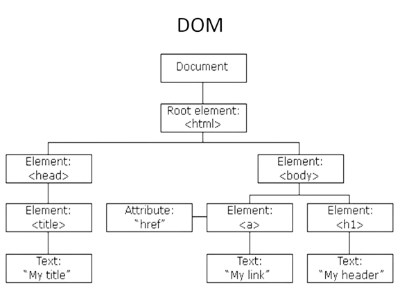

Javascript Fundamentals
In this blog post we're going to take a look at javascript, and how it fits in to our web development toolbox
The difference between HTML, CSS and Javascript
HTML is the core of the webpage. It gives the page structure using tags known as 'elements' that denote what it is, such as the header, body, paragraph, table and so forth.
You can also use it to insert images, add links, create special characters, add line breaks and other style aspects. HTML is also very simple to learn so if you want to know more
try lerning some!

CSS stands for Cascading Style Sheets, and it's responsible for how the HTML elements appear on screen. Imagine building a house, you might have seen one in that part way through stage
where the walls are up and they might even have had a little plastering and sanding to smooth out the imperfections. That is our HTML, it's rough but it does the job. CSS is the painting and interior design,
it turns that house structure into a home. CSS is a list of rules that allow us to assign different properties to HTML, from colour, layout, fonts and make our webpage adapt to different screen sizes.
Because of the way we use CSS we can make styles that can be assigned to one or multiple different parts of the web page, allowing us to reuse these styles whenever we want and create consistant and pleasing pages.
If you think my blog looks good, or more likely not so good, thats CSS!

Javascript is the more complicated of the three languages, but it is very powerful! It is supported nowadays by all modern web browsers and is used on almost every website for more powerful and complex functionality.
It can be used to modify a website and make it behave in different ways in response to user actions. Going back to our house analogy, javascript could be viewed kind of like the appliances and smart devices that help us out with
those small things that make a huge difference. An oven that takes your order and cooks it for you? A stereo that plays relaxing music when you walk in the lounge? Lights that adjust brightness depending on the time of day? Javascript. Let's explore some more about javascript below.

Control Flow and Loops
Javascript is a logic based language which means it has a control flow, a concept that can be a little tricky for our human brains to understand at first.
Control flow is the order in which the computer runs code. It has to been run from start to finish. It cannot deviate from it's logical path, it cannot turn back, it cannot stop to ponder the meaning of the functions it's performing. The only way it can deviate from it's path is by the extremely frequent structures that change
the control flow, such as conditionals and loops.
To put this in context let's imagine you need to clean the kitchen, and theres a set of tasks that need to be done in order for the kitchen to be clean. For us as humans we can decide what order to do the tasks in, we can judge when they are done, we can stop in the middle of a task and finish it later, we can even simply decide not to clean the kitchen.
If we were to make our computer clean the kitchen it would need to know what tasks to do, what order to do them in, when a task is deemed done, and it would not stop until it finishes or reaches an error. It seems pretty janky but we can give our computer more functionality by altering the control flow of our kitchen cleaning task with conditionals and loops.

Conditionals give our computer a branch in it's path by basically asking it a question and telling it what to do under the circumstances of the question. Getting back to cleaning this might look like "If the bench is dirty, wipe it up, otherwise move on to doing dishes".
The more conditionals we can give our computer, the better it can do the task; "If the bench is dirty, wipe it up. If we run out of cleaning products, let me know we ran out. Otherwise move on to the dishes"

Loops give our computer a task to perform over and over again until certain conditions are met. In context of our cleaning we could look at doing the dishes as a repetive loop, where we continue looping through the dishes, cleaning, drying and stacking them, until they are all done.

Functions are peices of code that are designed to perform a task that we can call in our control flow. Functions are important because they can give our computer more 'thinking power' when performing a task, by making calculations and using conditionals and loops to figure things out.
They are useful for us as big specific functions can do some very specific and complex things, while small generic functions can be used all over the place where needed.
we could build our kitchen cleaning program using functions as we may need to figure things out that need repeating later on. What about a function that calculates how much soap is needed per litre of water? That could be useful when washing the dishes and mopping the floor.
The DOM
The DOM stands for Document Object Model. It is a tree like representation of the HTML. It represents the webpage using a series of objects. The main object being the document object, which houses other objects, which house their own objects, and so on. Using DOM we can easily read, access and update the contents of the document.

The DOM is a representation of our HTML but in Javascript, if we change our html it will automatically update our javascript, and if we change anything in the DOM (javascript) our HTML will change to reflect that. Think of the DOM like this; you have a TV and you want to change the channel and volume, how do you bridge that interaction between you and the TV?
With a remote. You make the TV active and dynamic with the remote, Javascript makes the HTML page active and dynamic with the DOM.